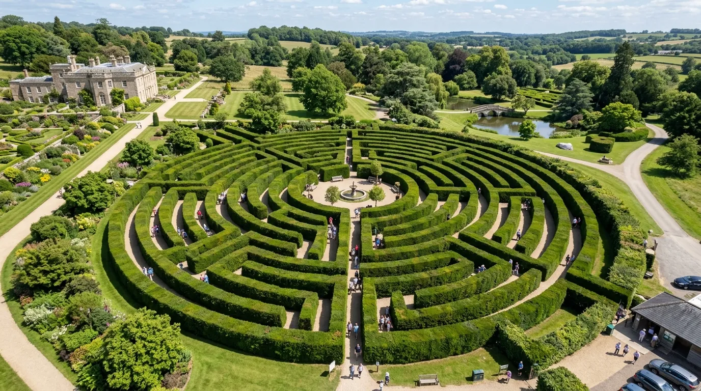

- Sekilas Tentang Coban Rondo
- Legenda di Balik Nama Coban Rondo
- Harga Tiket Masuk Coban Rondo Terbaru
- Maze Garden, Ikon Wahana di Coban Rondo
- Aktivitas Seru Lainnya di Coban Rondo
- Keindahan Air Terjun Coban Rondo
- Jam Operasional Coban Rondo
- Tips Berkunjung ke Coban Rondo
- Kesimpulan
- FAQ Seputar Coban Rondo
Coban Rondo adalah salah satu destinasi wisata alam paling ikonik di kawasan Malang Raya. Berlokasi di kaki Gunung Panderman dan Gunung Kawi, air terjun setinggi sekitar 84 meter ini sudah menjadi favorit wisatawan lintas generasi berkat perpaduan pemandangan alam yang memukau, udara sejuk pegunungan, dan berbagai wahana keluarga yang lengkap, termasuk Maze Garden alias taman labirin yang menjadi salah satu ikon utamanya.
Berikut ulasan lengkap seputar air terjun Coban Rondo, mulai dari harga tiket, wahana, hingga tips berkunjung.
Coban Rondo memadukan keindahan air terjun 84 meter yang megah, legenda rakyat yang menarik, serta berbagai wahana seru seperti Maze Garden, menjadikannya destinasi wisata alam keluarga terlengkap di Malang.
Sekilas Tentang Coban Rondo
Coban Rondo berlokasi di Jalan Coban Rondo, Desa Pandesari, Kecamatan Pujon, Kabupaten Malang, Jawa Timur. Kawasan ini berada di ketinggian sekitar 1.135 meter di atas permukaan laut, menjadikan suhu udaranya sejuk sepanjang hari, bahkan cenderung dingin saat pagi dan malam.
Jarak Coban Rondo dari pusat Kota Batu sekitar 12 km, sementara dari pusat Kota Malang sekitar 20 km, dengan waktu tempuh sekitar 30 menit hingga 1 jam tergantung titik keberangkatan dan kondisi lalu lintas. Patokan rute yang umum digunakan adalah pertigaan patung sapi di Pujon, yang menjadi penanda sebelum tiba di loket masuk kawasan wisata.
Air terjun ini sudah populer sejak puluhan tahun lalu dan dikenal luas berkat kombinasi keindahan alam serta legenda rakyat yang melekat padanya, menjadikan Coban Rondo bukan sekadar objek wisata alam, tetapi juga bagian dari kekayaan budaya lokal Malang.
Legenda di Balik Nama Coban Rondo
Nama "Coban Rondo" tidak lepas dari cerita rakyat yang diwariskan turun-temurun oleh masyarakat setempat. Dalam bahasa Jawa, "coban" berarti air terjun, sedangkan "rondo" berarti janda. Konon, nama ini berasal dari kisah seorang wanita bernama Dewi Anjarwati yang menjadi janda setelah suaminya, Raden Baron Kusumo, gugur dalam pertarungan melawan perampok saat hendak melindunginya dari niat jahat.
Legenda ini menambah nuansa mistis sekaligus historis pada kawasan Coban Rondo, dan hingga kini masih menjadi bagian dari daya tarik wisata yang sering diceritakan kepada pengunjung, terutama wisatawan yang penasaran dengan asal-usul nama tempat ini.
Harga Tiket Masuk Coban Rondo Terbaru
Berikut rincian biaya terbaru yang perlu kamu siapkan:
Untuk wisatawan mancanegara, harga tiket biasanya sedikit lebih tinggi dibanding wisatawan domestik. Paket tiket terusan sudah mencakup akses ke beberapa wahana sekaligus, seperti Taman Labirin, shooting target, panahan, dan bersepeda, selain akses ke area air terjun.
Catatan: Harga tiket dan kebijakan paket wahana dapat berubah sewaktu-waktu, sangat disarankan untuk mengecek informasi terbaru melalui media sosial resmi pengelola Coban Rondo atau menghubungi langsung sebelum berangkat, terutama jika berencana datang saat musim liburan panjang.
Maze Garden, Ikon Wahana di Coban Rondo
Salah satu daya tarik yang membedakan Coban Rondo dari destinasi air terjun lain di Malang adalah keberadaan Maze Garden atau Taman Labirin. Wahana ini berupa taman berbentuk labirin yang ditata dari tanaman pagar setinggi orang dewasa, dirancang menyerupai labirin raksasa yang menantang pengunjung untuk menemukan jalan keluar.
Maze Garden menjadi spot favorit, terutama bagi keluarga dan rombongan anak muda, karena memberikan sensasi permainan sekaligus keseruan berfoto di tengah rimbunnya tanaman hijau yang tertata rapi. Selain keseruan bermain, taman ini juga menawarkan nuansa asri yang menyegarkan, cocok dinikmati sambil berjalan santai menikmati udara sejuk khas pegunungan Pujon.
Umumnya, akses ke Maze Garden sudah termasuk dalam paket tiket terusan Coban Rondo, sehingga pengunjung tidak perlu membayar biaya tambahan lagi untuk menikmati wahana ikonik ini.

Aktivitas Seru Lainnya di Coban Rondo
Selain menikmati keindahan air terjun dan menjelajahi Maze Garden, Coban Rondo juga menawarkan berbagai aktivitas seru lain yang bisa dinikmati wisatawan dari berbagai usia, di antaranya:
- Bersepeda gunung, menyusuri jalur-jalur yang telah disediakan di area kawasan wisata
- Panahan dan shooting target, cocok bagi yang ingin mencoba tantangan permainan ketangkasan
- Berkuda, tersedia sebagai wahana tambahan bagi pengunjung yang ingin merasakan sensasi menunggangi kuda
- Flying fox, memberikan sensasi memacu adrenalin sambil menikmati pemandangan kawasan dari ketinggian
- Berfoto di spot-spot ikonik, mulai dari area air terjun, jembatan kayu, hingga taman-taman yang tertata apik
- Camping ground, bagi wisatawan yang ingin menikmati suasana malam pegunungan yang sejuk dan tenang
Kombinasi berbagai wahana ini menjadikan Coban Rondo bukan sekadar destinasi air terjun biasa, melainkan kawasan wisata keluarga yang lengkap dan cocok dikunjungi seharian penuh.
Keindahan Air Terjun Coban Rondo
Air Terjun Coban Rondo memiliki ketinggian sekitar 84 meter dengan debit air yang cukup deras, terutama saat musim penghujan. Airnya yang jernih dan sejuk berasal dari mata air pegunungan sekitar kawasan Gunung Panderman dan Gunung Kawi, menciptakan panorama yang begitu menyegarkan mata sekaligus pikiran.
Suasana di sekitar air terjun dikelilingi pepohonan rimbun serta tebing tinggi yang menambah kesan alami dan megah. Suara gemericik air yang jatuh dari ketinggian berpadu dengan kicauan burung dan udara sejuk pegunungan menciptakan pengalaman relaksasi yang sulit ditemukan di destinasi wisata perkotaan.
Untuk mencapai area air terjun, pengunjung perlu berjalan kaki dari area loket masuk melewati jalur setapak yang sudah tertata dengan baik, sehingga cukup mudah dilalui oleh berbagai kalangan usia, mulai dari anak-anak hingga lansia.
Jam Operasional Coban Rondo
Kawasan wisata Coban Rondo umumnya buka setiap hari, mulai Senin hingga Minggu. Beberapa sumber menyebutkan kawasan ini buka 24 jam penuh, namun sebagian wahana dan loket tiket resmi biasanya beroperasi mulai pagi hingga sore hari, kira-kira pukul 08.00 hingga 17.00 WIB. Karena jam operasional wahana dapat berbeda dengan jam buka kawasan secara umum, disarankan untuk mengecek jadwal terbaru sebelum berkunjung, khususnya jika berencana menikmati wahana tertentu seperti Maze Garden atau flying fox.
Tips Berkunjung ke Coban Rondo
- Datang di pagi hari untuk menghindari keramaian sekaligus menikmati udara pegunungan yang masih segar.
- Gunakan pakaian hangat, mengingat suhu di kawasan Coban Rondo cenderung sejuk hingga dingin, terutama pada pagi dan sore hari.
- Siapkan alas kaki yang nyaman untuk berjalan kaki menuju area air terjun maupun menjelajahi Maze Garden.
- Pertimbangkan membeli tiket terusan jika ingin menikmati banyak wahana sekaligus tanpa perlu membayar biaya tambahan berulang kali.
- Bawa uang tunai secukupnya untuk berjaga-jaga, karena fasilitas pembayaran digital di beberapa wahana bisa jadi masih terbatas.
- Cek informasi harga dan jam operasional terbaru sebelum berangkat, terutama saat musim liburan panjang atau akhir pekan.
- Jaga kebersihan kawasan wisata, agar keindahan alam Coban Rondo tetap terjaga untuk pengunjung berikutnya.
Kesimpulan
Coban Rondo membuktikan diri sebagai destinasi wisata alam keluarga yang lengkap di Malang, memadukan keindahan air terjun Coban Rondo yang megah, legenda rakyat yang menarik, serta berbagai wahana seru seperti Maze Garden, bersepeda gunung, hingga panahan. Dengan harga tiket yang tetap terjangkau dan suasana pegunungan yang sejuk, tidak heran jika Coban Rondo terus menjadi salah satu destinasi favorit wisatawan lintas generasi saat berkunjung ke Malang Raya.
Catatan: Harga tiket, biaya parkir, dan kebijakan wahana Coban Rondo dapat berubah sewaktu-waktu mengikuti kebijakan pengelola. Disarankan untuk mengecek informasi terbaru sebelum berangkat.